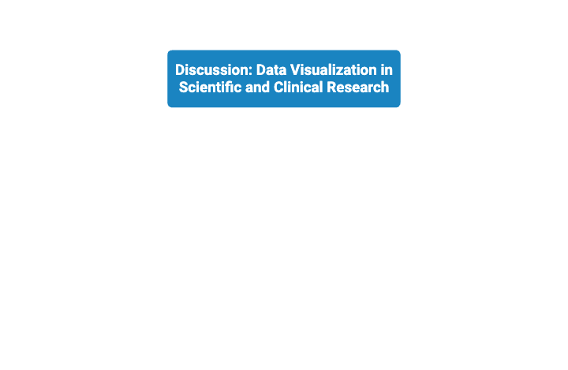
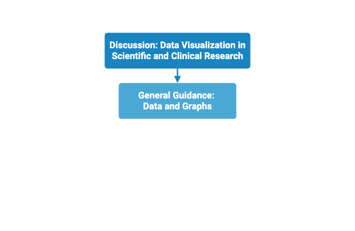
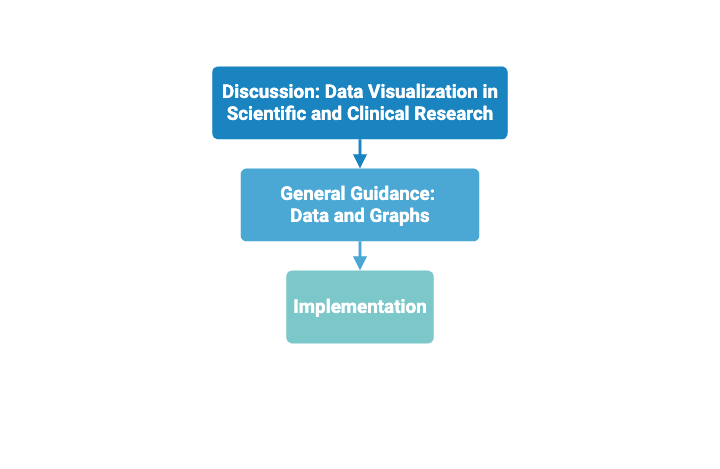
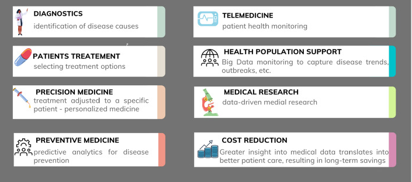
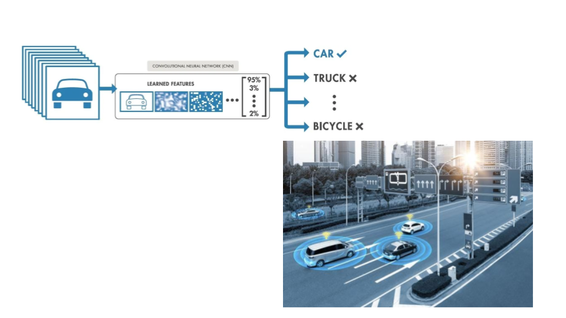
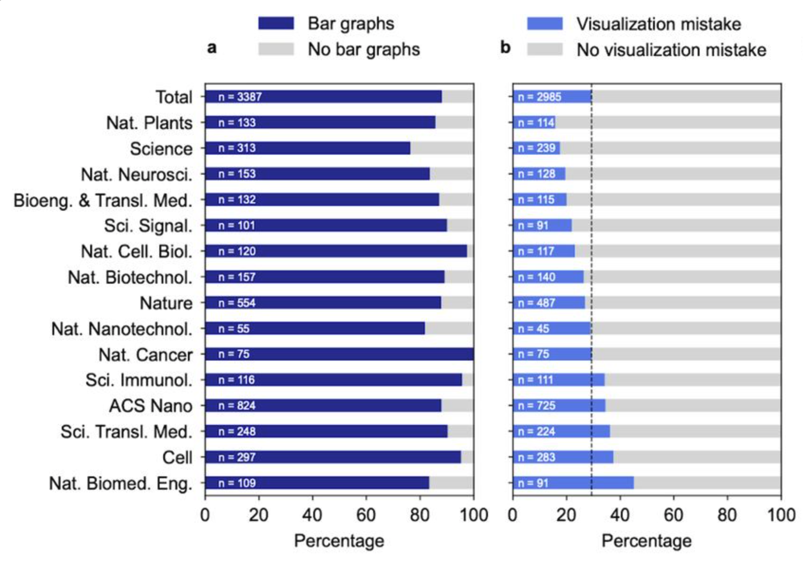
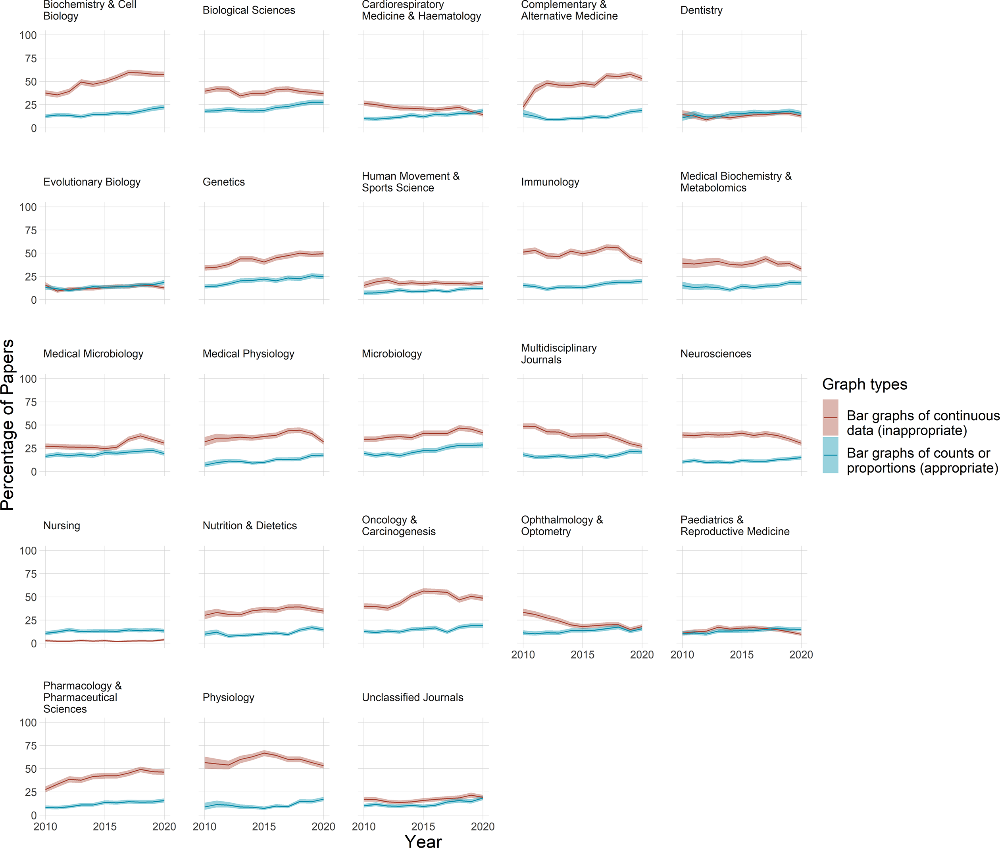

Overview of Data Visualization in Health and Biomedical Research
College of Graduate Studies
Northeast Ohio Medical University
Course Overview
Part 1: High Level Overview of Data Visualization in Biomedical and Clinical Research
- Foundations of data visualization within biomedical research
- Visualizing Categorical and Numerical Clinical and Biomedical Data
Course Overview
Part 2: Data Visualization Implementation
- Interactive Dashboards and Exploratory Analysis for Health Data
- Communicating and Evaluating Clinical and Biomedical Visualizations
Course Overview

Course Overview

Course Overview

Why Data Visualization Matters in Clinical and Biomedical Research?
Turning Complexity into Clarity
- Biomedical research produces massive, multidimensional datasets (genomics, imaging, electronic health records, clinical trials)
- Raw tables or statistics are often too overwhelming. Visualization reduces complexity and highlights patterns, trends, and anomalies
- Presenting data correctly can help save lives
Why Data Visualization Matters in Clinical and Biomedical Research?
Turning Complexity into Clarity
Facilitating Discovery
- Plots can reveal relationships that aren’t obvious in numbers
- Clinical Example: visualizations help detect outliers, biases, or early warning signals of treatment effects
Why Data Visualization Matters in Clinical and Biomedical Research?
Turning Complexity into Clarity
Facilitating Discovery
Improving Communication Across Disciplines
- Researchers, clinicians, patients, and policymakers need to interpret findings
- A clear figure (Kaplan–Meier survival curve, forest plot, heatmap, dashboard chart) can communicate results instantly across audiences
Why Data Visualization Matters in Clinical and Biomedical Research?
Turning Complexity into Clarity
Facilitating Discovery
Improving Communication Across Disciplines
Supporting Reproducibility and Trust
- Transparent figures allow others to verify results and see how conclusions were drawn
- Poor or misleading visualizations (e.g., truncated axes, exaggerated differences) have historically misinformed clinical practice
Data Visualization in Biomedical and Clinical Research

Batko, K., et al. (2022). J. Big Data.
Data visualization can save lives and reduce cost
Effective dashboards lead to significant positive improvements in outcomes. For example, some reductions in mortality, costs, and length of stay in multiple studies
- 73% reduction for 30-day mortality rate [Zygourakis, C., et. al (2017). JAMA Surgery]
- Patient length of stay in hospital, a proxy for service quality and effectiveness, was reduced [Jung, A., et. al. (2018). Journal of Surgical Research.]
Data visualization can save lives and reduce cost
Data visualizations reduce hospital costs
- Cost reductions ranged from $160000 (USD) in annual hospital operating room expenditure for gastric bypass surgeries to$10.7 million (USD) in the cost of total knee surgery in another hospitals [Rocchio, BJ. (2016)]
Harms of poor data visualization
Harms of poor data visualization
Space Shuttle Challenger (1986):
Decision-makers were shown unsorted tables/poor charts that hid the strong link between cold temperature and O-ring damage
Harms of poor data visualization
Space Shuttle Columbia (2003):
Accident Investigation Board criticized NASA’s reliance on dense PowerPoint slides that downplayed uncertainty about wing damage
Harms of poor data visualization

Atharva. (2022). Medium.
Harms of poor data visualization

Uber autonomous vehicle fatality
The National Transportation Safety Board (NTSB) found the system detected the pedestrian but the human machine interface dashboard did not present the correct data to prevent the intervention in time resulting in 1 death
Smiley, L. (2023). Wired.
Incorrect charts lead to poor interpretations
Survey of 3387 articles in 15 high-profile journals showed errors in data visualization > downstream error
- Data visualization general errors in published scientific literature:
- Oversimplified charts
- Plot contradictions with data source and accompanying tables
- Numeric distortion [axes and labels]
Prevalence of data distortion in bar graphs

Survey of 3387 articles in 15 high-profile journals showed errors in data visualization \(\rightarrow\) downstream error
- Bars that don’t start the y-axis at zero
- Bars drawn on logarithmic axes (or from log-transformed data) that lack a meaningful zero baseline
- Log-scale increase distortion
Smiley, L. (2023). Wired.
Prevalence of data distortion in bar graphs

Survey of 227,998 PubMed Central papers across 23 fields
- Misuse of bar graphs for continuous data presentation
- Error bars conceals distributional shape and outliers
- Presenting data with negative values using plots that start at zero-baseline
Riedel, N., et. al. (2022) Clin Sci (Lond).
Review
Recap: Why data visualization matters
- In biomedical/clinical work, visualizations turn:
- high-dimensional data into insight—supporting discovery
- clearer cross-disciplinary communication (e.g.,heatmaps, dashboards)
- Potential for transparency/reproducibility
- Potential to save lives and reduce cost
- clinical dashboards were associated with improved outcomes
- Ineffective data visualizations can distort meaning and can contribute to harmful decisions